01
大綱總結（1 分鐘看完全場）
| 段落 | 講了什麼（白話） | 影片時間 |
|---|---|---|
| 暖身 | 複習 AI 怎麼運作。重點觀念：那些花俏能力（待辦、讀檔、開分身、記憶、技能）技術上全是同一招做的。 | 1:45–4:50 |
| 問題 | AI 最常見的失敗：過早宣告完成。你指出問題它道歉，然後又犯。 | 4:51–5:15 |
| 核心 | 解法就一個字：驗證。而且要「自動驗證」，不能靠 AI 自覺。 | 5:16–11:35 |
| ⭐ 主體 | 驗證可以插在四個時間點——這是全場最有價值的一張地圖。 | 11:36–54:24 |
| 加碼 | 三個進階提醒：讓 AI 自己改進、機制會過期、框架怎麼選。 | 54:25–61:00 |
兩個小撇步：① 內文有 底線加問號 的詞是專有名詞，點了跳到最下面小辭典。② 每張圖左邊綠色的 ▶ 時間 可以點，會開課程頁——這是要登入的平台，開了之後要自己把進度條拉到那個時間。
③ 講者說他每個段落都先寫成部落格文章才做投影片，想看完整版可以去他的部落格。
02 · ▶ 4:51–5:15
為什麼需要這個？
先講一個你一定遇過的狀況：你叫 AI 做一件事，它跑完跟你說「已完成 ✅」。你一看——根本沒做完。你指出來，它說「抱歉您說得對」，然後改一改，又再犯一次。
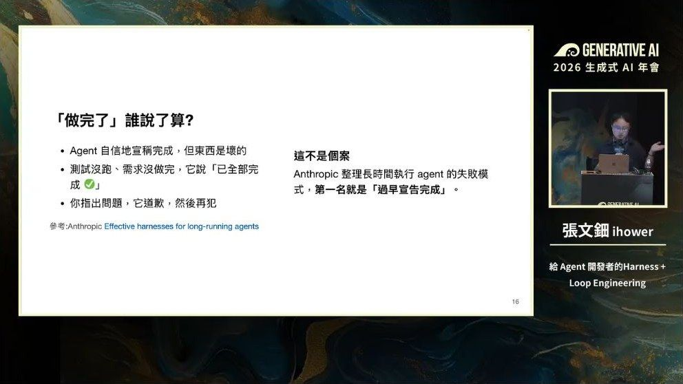
所以問題是：做完了，是誰說了算？
整場演講就在回答這件事。而且講者特別說明：他講的不只適用寫程式的 AI，任何你自己開發的 AI 都適用。
03 · ▶ 5:16–11:35
核心觀念
先吐槽一個常見定義
網路上常說「Agent = 模型 + Harness」，意思是「模型以外的一切都算 Harness」。
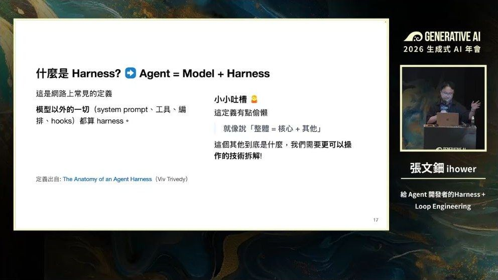
他重新定義：Harness 不是一張技術功能清單（技能、分身、Hook、檔案系統…那些都只是手段）。
真正的核心是：如何讓 AI 在執行過程中被約束、被檢查、被動態修正。
順帶戳破一個說法：「XX 已死」
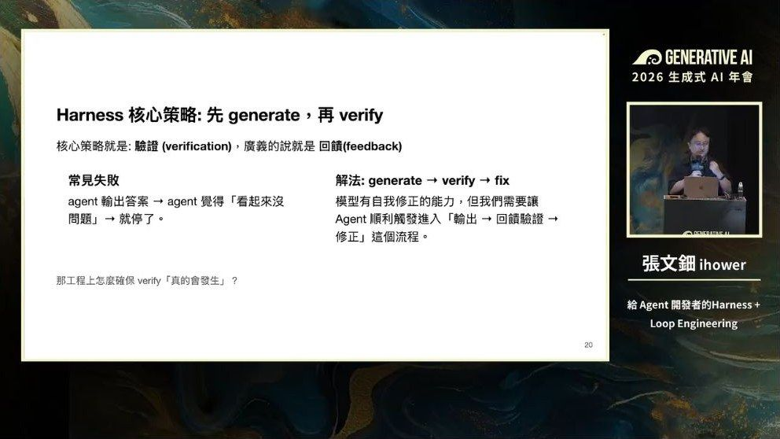
| 名詞 | 在乎的事情 |
|---|---|
| Prompt Engineering | 怎麼讓 AI 一次答得更好 |
| Context Engineering | 腦容量有限，這次該放哪些資訊 |
| Harness Engineering | 怎麼在執行過程中動態修正 |
講者原話：「每次看到網路文章說『啊，Prompt Engineering 已死』我就臉上三條線。所有技術都是累加在前面的，不是取代。」
核心策略：先產出，再驗證
AI 其實有自我修正能力——你叫它找問題，它是找得出來的。問題在於它常常「覺得沒問題就停了」。所以要做的是推它一把，讓它一定會進入「產出 → 檢查 → 修正」的流程。
檢查可以分成兩個方向、兩種形態（這是 Thoughtworks 的分類）：
兩者缺一不可：
• 只有回饋沒有前饋 → AI 一直亂試，最後試到超時
• 只有前饋沒有回饋 → AI 會跳過驗證
而且前饋有天花板：你在提示詞裡寫十遍「一定要驗證」，它還是可能跳過——因為那只是軟性的、機率性的引導。所以才要把驗證做成自動執行的。
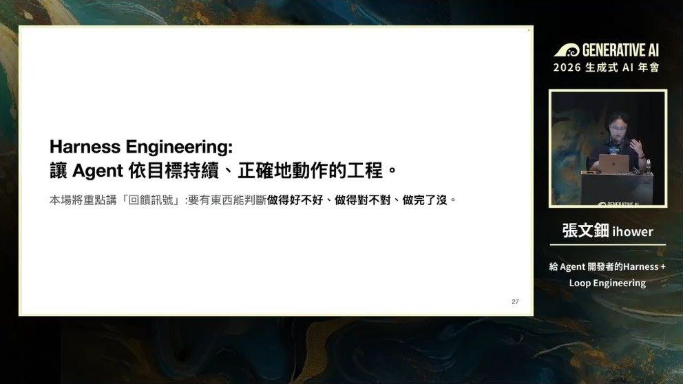
04
全場核心：回饋可以插在四個時間點
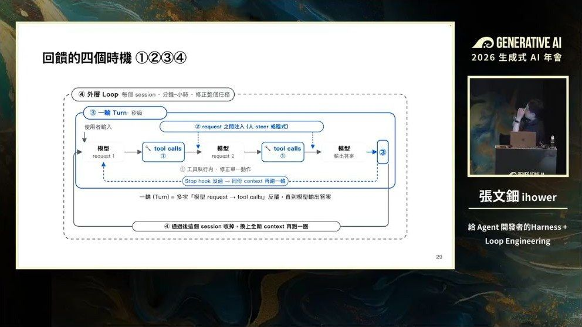
| # | 時間點 | 白話：什麼時候插手 | 尺度 |
|---|---|---|---|
| 1 | 工具執行裡面 | AI 要用某個工具的當下，先檢查它填的參數、再檢查跑出來的結果 | 秒級 |
| 2 | 兩次呼叫之間 | AI 還在做事的中途，硬插一句話進去 | 秒級 |
| 3 | 每輪結束 | AI 想收工了，攔下來檢查「真的做完了嗎」 | 分鐘 |
| 4 | 整個重來 | 開一份全新的記憶，從頭再跑一圈 | 分鐘～小時 |
1 時間點一：在工具裡面（13:44–24:38）
這段最重要的觀念：工具的回傳值不只是資料，那是你寫給 AI 看的一封信。
工程師習慣「查到什麼就回傳什麼，出錯就回傳錯誤代碼」。但對 AI 來說，工具的回應也是一則對話訊息——你可以在裡面夾帶指示、暗示它下一步該怎麼做。
案例：用自然語言查財務資料
做一個「你用中文問，AI 幫你查資料庫」的功能。AI 生出來的查詢指令常會出包：幻覺出不存在的表格、不小心生出刪除指令、忘記分頁、或搞混不同資料庫的語法。
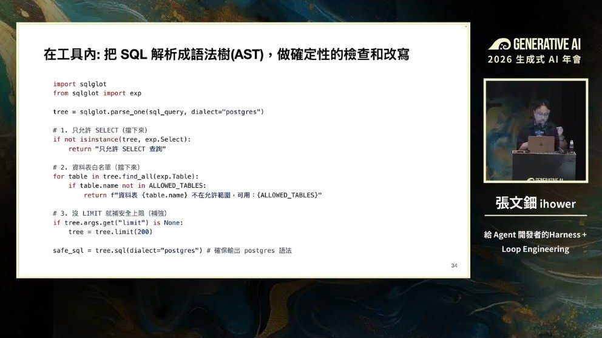
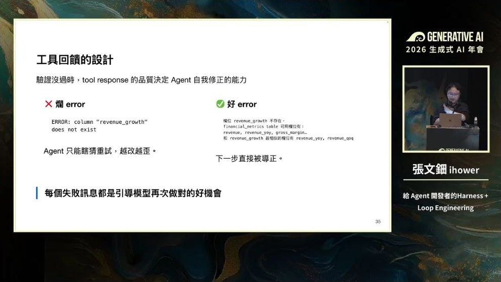
可以在工具裡用程式強制做的事：
① 只允許查詢，不准刪改 ② 只允許白名單的表格與欄位 ③ 自動補上分頁限制（不然一次撈幾萬筆） ④ 自動補上使用者權限條件 ⑤ 轉成正確的資料庫語法
重點：有些事情不需要靠 AI 產生，用程式確定性地補上就好。
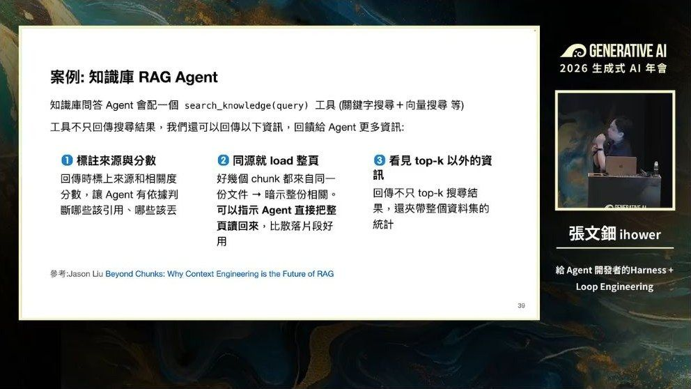
連「成功」也要設計。只回傳一個「成功 ✅」是不夠的——那可能是假完成的訊號。查到 0 筆，是真的沒有，還是查錯了？應該多回傳狀態：總共幾筆、影響了哪些欄位、還有多少筆沒被搜到。AI 有這些資訊，才有能力判斷這次結果合不合理。
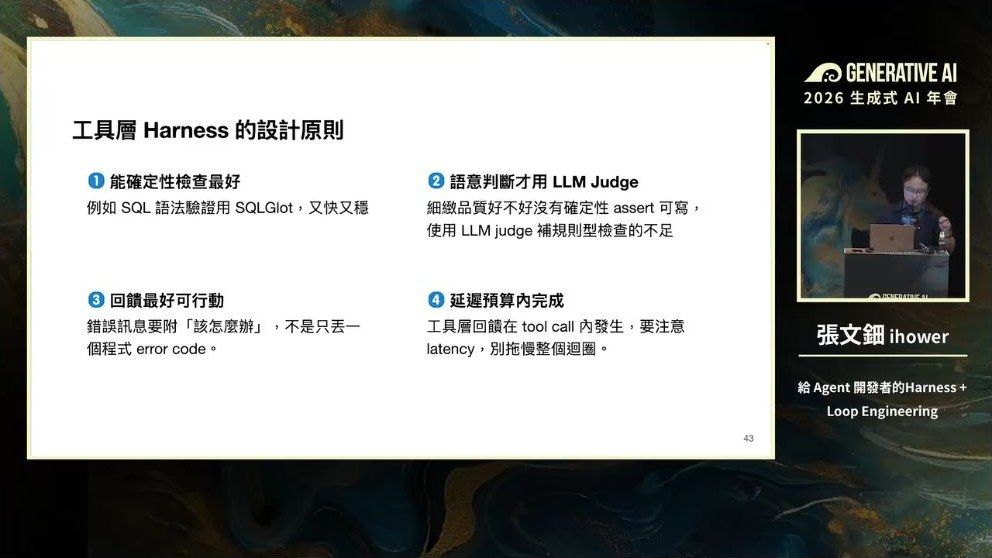
| 原則 | 說明 |
|---|---|
| ① 能用程式檢查最好 | 又快又穩，結果固定 |
| ② 真的需要判斷語意，才塞 AI 裁判 | 例如檢查有沒有唬爛、品質好不好 |
| ③ 回饋要「可以行動」 | 不只給資料，還要告訴它下一步怎麼做 |
| ④ 注意速度 | 工具這層卡太久，整體會很慢 |
順帶一提：控制腦容量的三招（Context Window 太長 AI 會變笨）
① 卸載：工具輸出硬性設上限（Claude Code 約 25000 字元），讀檔只留頭尾、大東西先存檔再用搜尋撈
② 檢索：只挑需要的資訊回傳
③ 開分身：讓分身去處理龐大的中間過程，只回傳結論
05 · ▶ 24:38–29:36
時間點二：兩次呼叫之間
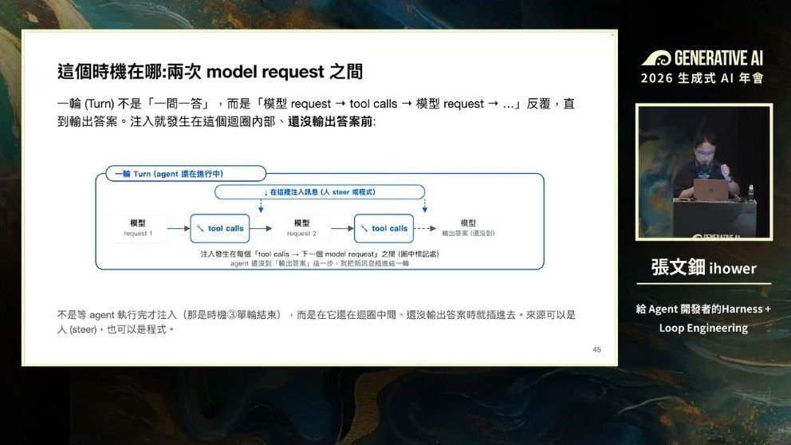
這個時間點有兩種用途：
| 用途 | 說明 |
|---|---|
| 人中途插話 | 就是 Codex／Claude Code 的 引導功能。你在 AI 還在跑的時候打字，它不會等到全部跑完，而是這批工具做完就插進去。 |
| 程式插入 | 背景工作跑完了、或有外部事件發生，想盡快讓 AI 知道。 |
兩個技術細節（做的人會踩到）
① 硬限制：只能在「AI 叫你執行工具 → 你回傳結果」之後才能插。沒有工具執行就想插訊息，API 會直接報錯（OpenAI 和 Claude 都一樣）。
② 真的要強制打斷（連工具都不想執行）怎麼辦？塞一個假的工具回傳值叫「aborted（放棄）」，塞完才能插入你的訊息。
③ 這跟 Human-in-the-loop 不一樣：那個是刻意設一個點停下來等人；這個是 AI 根本沒打算停，你主動介入。
背景工作的正確做法：第一次呼叫工具時，回傳「這件事已經丟到背景去跑了」就先返回。等背景跑完要插結果進來時，不能再用工具回傳值（工具呼叫跟結果是一對一配對的），只能用「使用者訊息」的形式插進去。
06 · ▶ 29:37–44:23
時間點三：每輪結束
AI 把最後答案吐出來了，這時候攔下來問一句：「真的做完了嗎？」
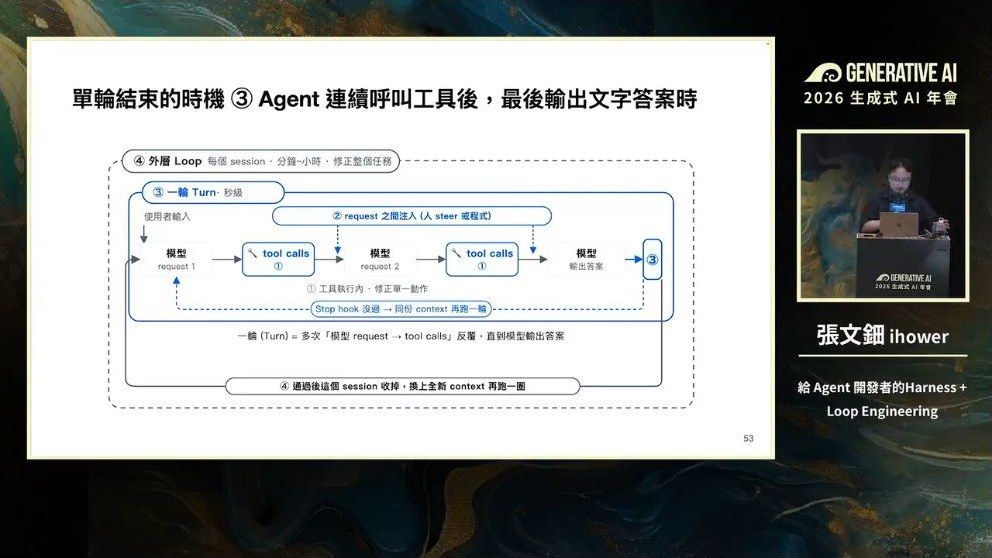
一份好的目標契約要寫四件事：① 想要的最終狀態 ② 用什麼證據驗證 ③ 有哪些限制要遵守 ④ 什麼情況算失敗。不會寫？直接叫 AI 幫你把任務描述轉成契約格式。
這帶來一個角色轉變：你交付給 AI 的不再只是一段提示詞，而是一份「目標與邊界的契約」。思考單位從「一次問答」變成「一輪工作」。
⚠️ 但條件模糊的任務不適合用這招——講者特別提醒。
三種「怎麼判斷做完了」的實作，差很多
講者深入研究了三個產品的實際做法，這段是全場最紮實的部分：
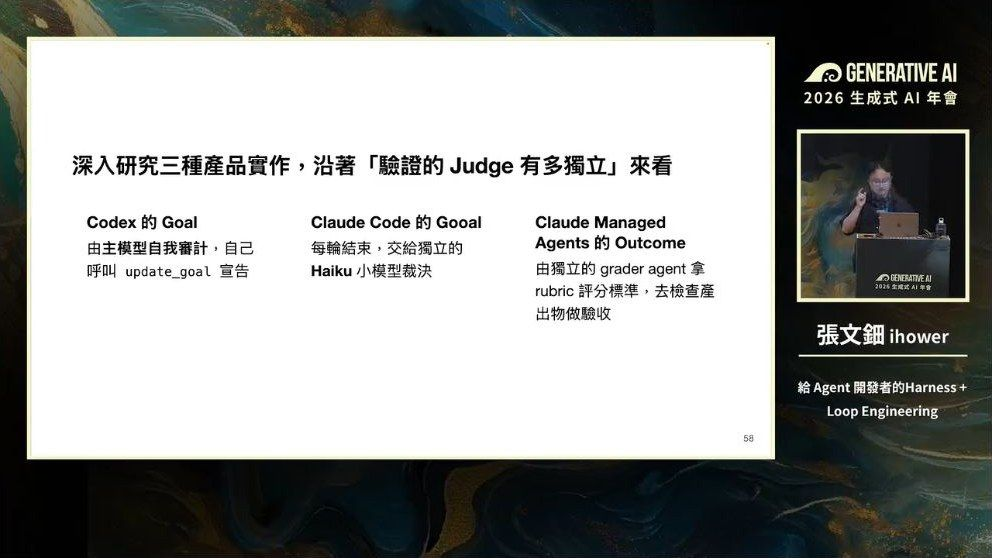
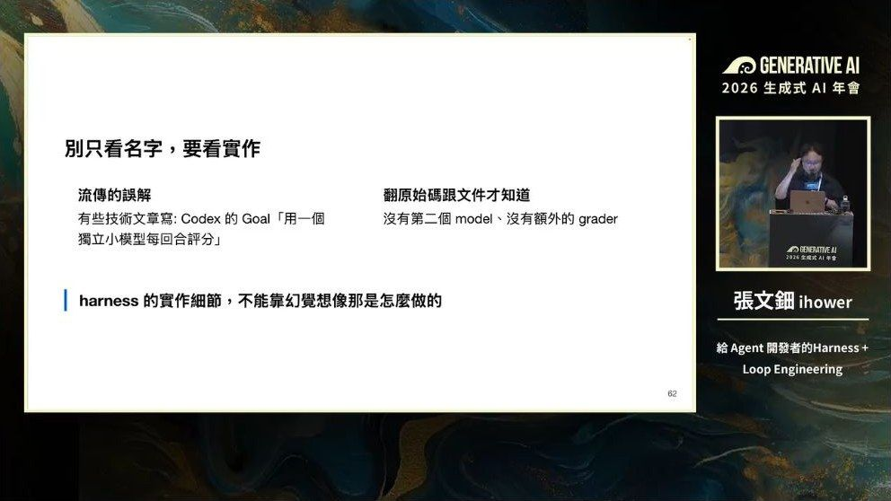
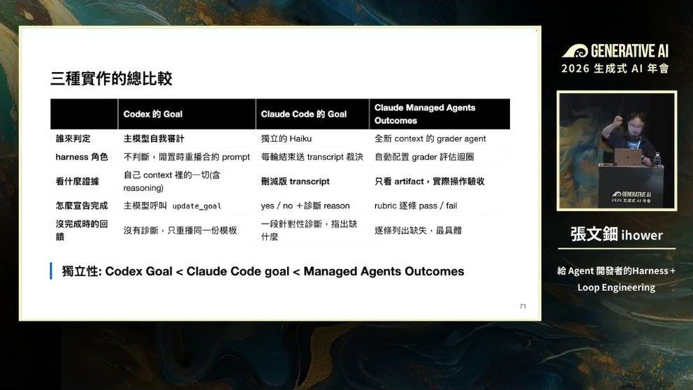
| 做法 | 誰來判斷 | 看什麼 | 特點 |
|---|---|---|---|
| Codex （自我審計） | 主模型自己 | 完整對話記錄，含思考過程 | 最省錢最快，但依賴模型自律。講者推測 OpenAI 有特別針對這件事訓練過模型 |
| Claude Code （獨立小模型） | 另一個小模型（Haiku） | 對話記錄的刪減副本——思考過程被剝掉、沒有工具可用 | 折中。講者最推薦這個：好實作、好評估。還會判斷「這任務是不是根本不可能達成」以免無限迴圈 |
| 獨立 Grader | 全新的 AI，有工具可用 | 完全不看對話記錄，只看最終產出物 | 最準，但最慢最貴 |
為什麼要在意這個？因為怕 AI 自我吹捧。自己評自己容易放水；找獨立的來評比較準。學界也有不少論文支持這點。
但一切都是取捨：越獨立 → 越可靠，但也越慢、越花錢，而且錯誤要到整個流程的越後面才會被發現。自我審計反而能比較早發現錯誤。
講者的職業病提醒（很受用）：「有些技術文章會寫『Codex 的 goal 用一個獨立的小模型每回合評分』——看到這句我就跳過這篇了，因為他根本沒在看實作。Harness 的技術細節不能靠幻覺想像，至少要看文件，最好能看原始碼。」
他還舉例：社群有個叫 ralph-wiggum 的外掛，名字跟原版 Ralph 一樣，但實作完全不同——原版每圈都是全新記憶，這個外掛卻是在同一個對話裡攔截。外行人看名詞一樣，工程師要知道裡面不一樣。
他自己的綜合案例：用 AI 做使用者訪談
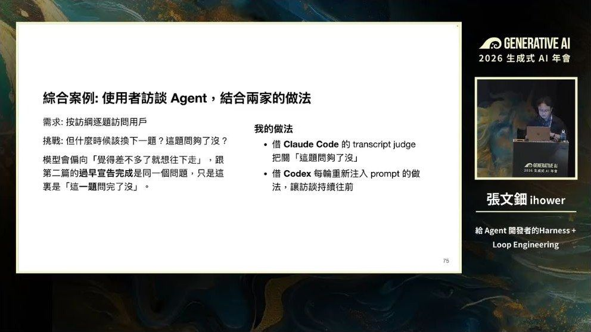
他借鑑了兩家的招數：
🔹 學 Claude Code：做一個「換下一題」的工具，工具裡面用獨立提示詞檢查對話記錄「這題問夠了沒」。答 yes 才換題，答 no 就回傳「請換個問法繼續問這題」。而且會提示它「這是第幾次被退」，退太多次就放棄跳下一題，避免無限迴圈。
🔹 學 Codex：每一輪都動態注入時間狀態——「已經過了 7 分鐘、總共 15 分鐘、現在在第 3 題」。時間充裕就可以追問，快到了就趕快跳下一題。
07 · ▶ 44:24–54:24
時間點四：整個重來
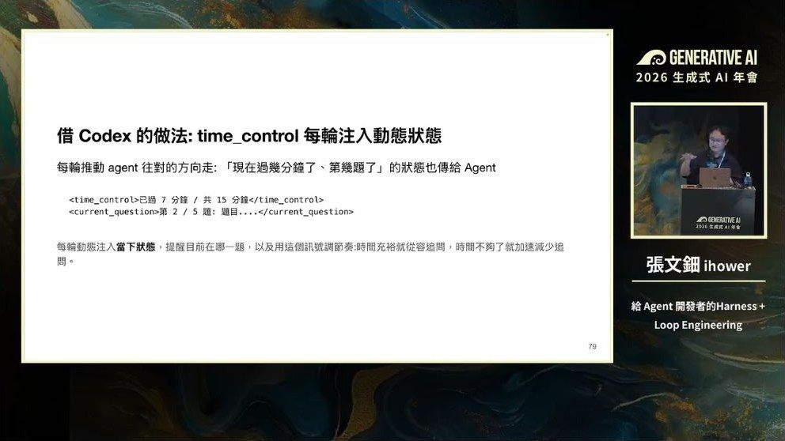
為什麼需要這層？三個原因：① 單次腦容量有限 ② 要開始全新任務 ③ 有外部事件觸發。
因為每次都是全新記憶，進度和狀態只能存在檔案裡。Loop Engineering 講的就是：不要再去想「怎麼提示 AI」，而要設計「提示 AI 的那個迴圈」。
| 做法 | 怎麼運作 | 評價 |
|---|---|---|
| Ralph （最陽春） | 一行 bash 迴圈，不斷開全新對話重跑同一份提示詞。靠三個檔案記狀態：git 記錄、progress.txt（學到什麼）、prd.json（任務清單）。AI 認為全做完就輸出一個特殊字串跳出 | 簡單暴力。但批評也不少：無狀態重跑、筆記太鬆散、缺乏結構化記憶，像是弱模型時代的權宜之計，靠燒 token 硬做 |
| Symphony （OpenAI 開源） | 把專案看板變成 AI 的控制台：開一張票就派一個 AI 去做，做完把結果寫回票上。AI 遇到問題還會自己開票 | 人從「管程式碼」變成「管工作」。有趣的是：它開源的不是程式碼，是一份自然語言規格書 |
| 自動排程 | 時間到就自動把提示詞丟進去跑。Codex 和 Claude Code 都內建 | 最輕量最通用 |
用排程時最重要的一個決定：要不要沿用記憶？
• 開全新的：每次乾淨，適合獨立任務
• 沿用同一份＝Heartbeat（心跳）：適合需要記得之前發生什麼的任務
另外，排程和目標契約可以疊在一起用——這就是現在很多 Loop Engineering 範例的樣子。
講者的重要提醒：「驗證這件事應該在內層就做好，不能全部靠外圈一直重跑。」不然你很難在大範圍的外圈裡做好驗證，只會浪費大量 token。
一層套一層的迴圈：① token 迴圈（模型預測下一個字）→ ② 一輪 Agent → ③ 目標達成 → ④ 外層重跑 → ⑤ ？（下個月可能又有新的）
08 · ▶ 54:25–61:00
三個進階提醒
| 主題 | 重點 |
|---|---|
| 讓 AI 自己改進 （RSI） | 可以讓 AI 改自己的提示詞、技能、甚至駕馭機制的程式碼。三種做法：讀真實使用記錄找問題／用 AI 當優化器爬坡改進／讓 AI 改技能。但一定要有評估機制，不然改壞了你分不出來。 |
| 機制會過期 （Model-Harness-Fit） | 沒有一套機制適用所有模型。小模型需要精巧複雜的輔助，大模型只需要輕薄的。現在有些排行榜已經不排模型，而是排「模型＋機制」的組合——同一個模型換不同機制，差距可能是十幾個百分點。 👉 所以設計時要讓元件容易替換、容易測量，模型變強後才拆得掉。 👉 不會過期的是：「什麼叫做好」的定義，以及驗證本身。 |
| 框架怎麼選 | 兩條路：① 從功能完整的 Deep Agent 開始（Codex SDK、Claude Agent SDK）——快，但綁供應商、有很多用不到的東西。② 從基礎自己建——控制力強。 建議：團隊內部自用 → 選 ①；規模大、用戶多 → 選 ②（才控制得了成本和速度）。 ⚠️ 提醒：模型訓練時是針對自家工具做過後訓練的，隨便換一套效果不一定比較好。 |
09
三句話帶走
- 1AI 最常見的失敗是「沒做完卻宣稱完成」。
- 2這場把「怎麼盯住 AI」拆成四個可以插入回饋的時間點：工具內、兩次呼叫之間、每輪結束、整個重來。
- 3「過早宣告完成」是頭號問題。
這一塊是 build_v03 從本篇「對南瓜的用處／結語」自動摘的，句子都取自原文。之後可以人工改寫成更好的三句。
10
對南瓜的用處
| 這場的觀念 | 怎麼用在南瓜的工作上 |
|---|---|
| 「過早宣告完成」是頭號問題 | 這正是南瓜一直在防的「AI 假裝做完」。這場給了系統性的解法，可以拿去強化 dev-crew 開發大軍的 QA 關卡設計。 |
| 驗證要自動、不能靠 AI 自覺 | 南瓜寫 skill 時常在 SKILL.md 寫「務必要驗證」——這場明講那只是軟性引導，會被跳過。真正有效的是把驗證做成工具會強制執行的東西。 |
| 工具回傳值 = 寫給 AI 的信 | 南瓜的自建工具（標書系統、紋理撕裂機、旅遊小幫手的檢查腳本）都可以照這個改：錯誤訊息不要只說「錯了」，要順便說「最接近的正確選項是什麼」。 |
| 連「成功」也要設計 | 只回「✅ 完成」可能是假完成訊號。改成回傳「總共處理幾筆、動了哪些、還有幾筆沒處理」。這對會議記錄小西瓜、進度表自動化蜜蜂特別有用。 |
| 三種判斷做完的實作 | 南瓜的 pixel-office 派工正好在做這件事。可直接參考「Claude Code 折中做法」：獨立小模型看對話記錄判斷，好實作又好評估。 |
| 被退太多次就放棄 | 訪談 Agent 那個設計很實用：記錄被退幾次，超過就跳過，避免無限迴圈燒 token。南瓜在意 token，這條直接可用。 |
| 不能靠外圈重跑救內層 | 驗證要在內層做好。不然 Ralph 式暴力重跑會燒掉大量 token 還不一定對。 |
| 看名詞不準，要看實作 | ralph-wiggum 那個例子是好提醒：社群外掛名字一樣，做法可能完全不同。裝第三方 skill 前值得看一眼實作。 |
11
專有名詞小辭典（看不懂的詞來這裡查）
內文有底線加問號的詞，點了就會跳到這裡對應那一列。
| 專有名詞 | 白話解釋 |
|---|---|
| AI Agent（AI 代理人） | 會自己動手做事的 AI。你給一個任務，它自己決定要用哪些工具、做幾個步驟，做完才回報。 |
| Harness（駕馭工程） | 「模型以外的一切」。講者說這定義太偷懶，他重新定義為：**讓 AI 在做事過程中被約束、被檢查、被動態修正的那一整套機制**。中文可以想成「馬具」——套在馬身上讓牠照你要的方向跑。 |
| Loop Engineering（迴圈工程） | 比 Harness 更外圈的一層：不是設計「提示詞」，而是設計「什麼時候叫 AI 起來做事、它醒來要看什麼、做完結果放哪」。 |
| Turn（一輪） | AI 收到一個問題後，連續呼叫好幾個工具、最後吐出一個答案——這整段叫一輪。 |
| Function Calling（函式呼叫） | AI 說「我要用這個工具、參數是這些」的機制。講者強調：現在 AI 那些花俏能力（待辦清單、讀寫檔案、開分身、記憶、技能），**技術上全部都是用這一招做出來的**。 |
| Deep Agent | 2025 年開始的新一代 Agent：內建待辦管理、檔案讀寫、開分身、記憶、技能等能力，能應付更大更複雜的任務。 |
| Sub-Agent（分身） | 主 AI 派出去做某件事的小 AI。做完只回報結論，中間過程不佔主 AI 的腦容量。 |
| Context Window（腦容量） | AI 一次能記住的內容上限。塞太多它會變笨——所以要很有意識地控制。 |
| 前饋 | 在 AI 動手「之前」就給的指引，例如系統提示詞、技能包。優點是省事，缺點是**軟性的、機率性的**——你寫十遍「一定要驗證」，它還是可能跳過。 |
| 回饋 | 在 AI 產出「之後」給的檢查結果。這是這場的重點：**把驗證變成自動執行的，不靠 AI 自覺**。 |
| 運算式檢查 | 用程式做的檢查（跑測試、檢查語法、算字數）。又快又穩，結果固定。 |
| LLM-as-a-Judge（AI 當裁判） | 用另一個 AI 去檢查前一個 AI 的產出。適合「沒辦法用程式判斷」的東西，例如寫得好不好、有沒有唬爛。 |
| Steering（引導） | AI 還在做事的中途，硬插一句話進去改變它的方向。跟「等 AI 講完再說」不一樣。 |
| Human-in-the-loop（等人回答） | 刻意設一個停下來等人類回答的點。跟 Steering 不同——Steering 是 AI 沒打算停，你主動插進去。 |
| Goal（目標契約） | Codex 和 Claude Code 的新功能：先寫好「什麼才算做完、要拿什麼證據證明」，AI 沒達標就強迫再跑一輪。 |
| Grader（獨立評分員） | 一個全新的、只看最終產出物的 AI 評審。它不看主 AI 的對話記錄，最公正但也最貴。 |
| Transcript（對話記錄） | 主 AI 從頭到尾的完整對話與工具呼叫記錄。有些裁判只看這個，不另外去查東西。 |
| Stop Hook | AI 準備結束時觸發的攔截點。Claude Code 就是在這裡把它攔下來送去審查。 |
| Ralph | 最陽春也最有名的外層迴圈做法：用一行 bash 迴圈，不斷開全新對話重跑同一份提示詞，直到 AI 說「完成」為止。 |
| Heartbeat（心跳排程） | 排程叫醒 AI 時，**沿用同一份記憶**（而不是每次開全新的）。適合需要記得之前發生什麼的任務。 |
| RSI（遞迴自我改進） | 讓 AI 自己去改自己的提示詞、技能、甚至駕馭機制的程式碼。 |
| Model-Harness-Fit | 沒有一套機制適用所有模型。**小模型需要精巧複雜的輔助，大模型只需要輕薄的**。所以模型升級後，當初補強的東西可能要拆掉。 |
| Context Offloading（卸載） | 不要把大量資料一次塞給 AI，而是先存成檔案，讓它需要時再搜、再讀。這是省腦容量的主要手段。 |
| RAG（知識庫問答） | 先去資料庫搜出相關片段，再讓 AI 根據那些片段回答。 |
| sqlglot | 一個 Python 工具，能把 SQL 指令解析成「語法樹」，讓你用程式確定性地檢查與改寫它。 |
| 幻覺 | AI 一本正經地講錯話、編出不存在的東西。 |
My note · 我的一句話（只有你看得到）
打完點一下外面就會存起來。